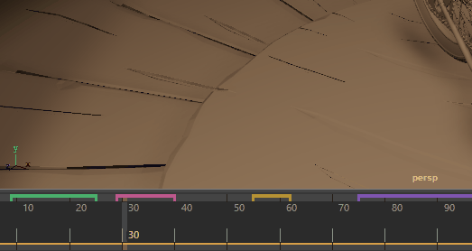

“时间滑块书签”(Time Slider Bookmarks)可用于标记或亮显“时间滑块”(Time Slider)上的区域。
创建书签
- 在“时间滑块”(Time Slider)上选择要添加书签的帧。（按住 Shift 键并在“时间滑块”(Time Slider)上拖动以选择帧。）
注： 可以为单帧或一系列帧添加书签。

- 单击“范围滑块”(Range Slider)中的“书签”(Bookmark)图标
 。
将打开“创建书签”(Create Bookmark)窗口。由于已选择帧，因此对话框中的“开始帧”(Start frame)和“结束帧”(End frame)已填充。(Alt (Option) + T ：创建书签(Create bookmark)）如果未选择任何帧，则将使用当前帧及其后的帧在当前时间创建单帧书签。
。
将打开“创建书签”(Create Bookmark)窗口。由于已选择帧，因此对话框中的“开始帧”(Start frame)和“结束帧”(End frame)已填充。(Alt (Option) + T ：创建书签(Create bookmark)）如果未选择任何帧，则将使用当前帧及其后的帧在当前时间创建单帧书签。“书签”(Bookmark)图标位于“时间滑块”(Time Slider)下方

- （可选）命名书签。
- 为书签选择一种颜色。如果不选择颜色，将指定默认颜色。
- 单击“创建”(Create)。书签将显示在选定帧的上方。
-
Alt (Option) + Shift + T：“快速创建书签”(Quick Create Bookmark) - 创建不带名称的书签并指定随机颜色
-
通过在书签上单击鼠标右键，可以仅访问影响此书签的设置。
将光标悬停在书签上可显示书签的名称和持续时间。确保在“首选项”(Preferences)> “帮助”(Help) >“弹出帮助”(Popup Help)中已启用“显示工具动画演示”(Display Toolclips)。

提示：
更新书签
也可以使用新信息更新现有书签。
使用选择的帧更新书签
- 按住 Shift 键并拖动以在“时间滑块”(Time Slider)上选择帧。
- 在要更新的书签上单击鼠标右键。将显示“时间滑块书签”(Time Slider Bookmark)菜单。
- 单击“使用当前选择更新书签”(Update Bookmark with selection)。

编辑书签
创建书签后，在书签上单击鼠标右键，然后选择“编辑”(Edit)以显示“创建书签”(Create Bookmark)窗口，从中可以对书签进行修改。
也可以在“时间滑块”(Time Slider)上单击鼠标右键，然后从“动画控件”(Animation Controls)菜单中选择“书签管理器”(Bookmark Manager)。“书签管理器”(Bookmark Manager)可用于编辑场景中的所有书签。有关编辑书签的详细信息，请参见书签管理器。
书签管理器(Bookmark Manager)